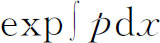
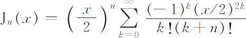
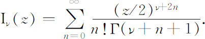
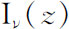

8．总结
如我们已经看到的，为了解决最初只不过涉及一些积分的物理问题，逐渐引导到一个新的数学分支的出现，即常微分方程的建立。到18世纪中期，微分方程的课题成为一门独立的学科，而这种方程的求解成为它本身的一个目标。
对解的理解与寻求，在本质上逐渐起了变化。最初，数学家用初等函数找解，接着他们满足于用一个没有积出的积分来表示解。在用初等函数及其积分来寻找解的巨大努力失败之后，数学家就变得满足于用无穷级数求解了。
把解表示成积出形式的难题没有被遗忘掉，但数学家们不是企图用这种方式去解物理问题中出现的特殊微分方程，而是去寻找那些可以用有限个初等函数表示其解的微分方程。可以用这种方式积分的大量微分方程找到了。达朗贝尔（1767）研究过这一问题，并把椭圆积分列入了可以接受的解答中。对这问题的一个典型研究方法是由欧拉（1769）和其他一些人做出的，这是从解可以表示成积出形式的微分方程出发，然后从这些已知方程导出其他的方程。另外一种研究是寻找级数解可以只含有限多个项的条件。
在孔多塞（1743—1794）著的《积分计算》（Du calcul intégral，1765）中，一个有趣而没有结果的篇章是，他企图把求解常微分方程所用的许多孤立的方法与技巧整理出一个条理。他把这种运算列成微分、消去和替换，并想把所有的方法都划归到这些规范运算。这个工作是失败了。与这个计划类似的是，欧拉证明凡是可用变量分离法的地方都可用积分因子，但是反之不然。他还证明对于高阶微分方程，变量分离法将是不可行的。至于寻找替换，他发现没有一般原则(49)，而且它与直接求解微分方程的难度相同。但是，变换可以降低微分方程的阶。欧拉用这个概念去解n阶非齐次线性常微分方程，甚至在齐次的情况，他想适当地选取p，使得每个

给出常微分方程的一阶因子。降阶法也是黎卡蒂的方案。还有许多其他的方法，包括拉格朗日的未定乘子法。最早以为拉格朗日方法是普遍适用的，但是结果并非如此。探索常微分方程的一般积分方法大概到1775年终止。许多新的著作仍旧是研究常微分方程的，特别是那些从求解偏微分方程中得出的常微分方程。但是，除了我们这里已提到过的那些方法以外，一百年上下没有发现别的重大的新方法；直到19世纪末才引进了算子方法和拉普拉斯变换。事实上，人们对于一般的求解方法的兴趣减退了，因为得到了一些适合于应用的这种或那种形式的方法。求解常微分方程广泛的综合原则仍付阙如。总的说来，这门学科还是各种类型的孤立技巧的汇编。
参考书目
Bernoulli，James：Opera，2 vols．，1744，reprinted by Birkhaüser，1968．
Bernoulli，John：Opera Omnia，4 vols．，1742，reprinted by Georg Olms，1968．
Berry，Arthur：A Short History of Astronomy，Dover（reprint），1961，Chaps．9-11．
Cantor，Moritz：Vorlesungen über Geschichte der Mathematik，B．G．Teubner，1898 and 1924，Vol．3，Chaps．100 and 118，Vol．4，Sec．27．
Delambre，J．B．J．：Histoire de l'astronomie moderne，2 vols．，1821，Johnson Reprint Corp．，1966．
Euler，Leonhard：Opera Omnia，Orell Füssli，Series 1，Vols．22 and 23，1936 and 1938；Series 2，Vols．10 and 11，Part 1，1947 and 1957．
Hofmann，J．E．：“Über Jakob Bernoullis Beiträge zur Infinitesimal-mathematik，”L'Enseignement Mathématique，（2），2，61-171．Published separately by Institut de Mathématiques，Geneva，1957．
Lagrange，Joseph-Louis：Œuvres de Lagrange，Gauthier-Villars，1868-1873，relevant papers in Vols．2，3，4，and 6．
Lagrange，Joseph-Louis：Mécanique analytique，1788；4th ed．，Gauthier-Villars，1889．The fourth edition is an unchanged reproduction of the third edition of 1853．
Lalande，J．de：Traité d'astronomie，3 vols．，1792，Johnson Reprint Corp．，1964．
Laplace，Pierre-Simon：Œuvres complètes，Gauthier-Villars，1891-1904，relevant papers in Vols．8，11 and 13．
Laplace，Pierre-Simon：Traité de mécanique céleste，5 vols．，1799-1825．Also in Œuvres complètes，Vols．1-5，Gauthier-Villars，1878-1882．English trans．of Vols．1-4 by Nathaniel Bowditch，1829-1839，Chelsea（reprint），1966．
Laplace，Pierre-Simon：Ex position du système du monde，1st ed．，1796，6th ed．in Œuvres complètes，Gauthier-Villars，1884，Vol．6．
Montucla，J．F．：Histoire des mathématiques，1802，Albert Blanchard（reprint），1960，Vol．3，163-200；Vol．4，1-125．
Todhunter，I．：A History of the Mathematical Theories of Attraction and the Figure of the Earth，1873，Dover（reprint），1962．
Truesdell，Clifford E．：Introduction to Leonhardi Euleri Opera Omnia，Vol．X et XI Seriei Secundae，in Euler，Opera Omnia，（2），11，Part 2，Orell Füssli，1960．
————————————————————
(1) Œuvres，10，512 514．
(2) Math．Schriften，5，306．
(3) Acta Erud．，1690，217-219＝Opera，1，421-424．
(4) Acta Erud．，1691，274-276＝Opera，1，48-51．
(5) Johann Bernoulli，Der Briefwechsel von Johann Bernoulli，Birkhäuser Verlag，1955，97-98．
(6) 第141页。
(7) Acta Erud．，1696，145．
(8) Opera，1，266．
(9) Phil．Trans．，29，1716，399-400．
(10) Acta Erud．，1717，349 ff．也见约翰·伯努利，Opera，2，275-279．
(11) Comm．Acad．Sci．Petrop．，7，1734/1735，174-193，pub．1740＝Opera，（1），22，36-56．
(12) 1715，p．26．
(13) Hist．de l'Acad．des Sci．，Paris，1734，196-215．
(14) Vol．1，pp．393 ff．
(15) Hist．de l'Acad．des Sci．，Paris，1769，85 ff．，pub．1772．
(16) Hist．de l'Acad．des Sci．，Paris，1772，Part 1，344 ff．，pub．1775＝Œuvres 8，325-366．
(17) Nouv．Mém．de l'Acad．de Berlin，1774，pub．1776＝Œuvres，4，5-108．
(18) Phil．Trans．，28，1713，26-32，pub．1714；亦见Phil．Trans．Abridged，6，1809，7-12，14-17．
(19) Comm．Acad．Sci．Petrop．，3，1728，13-28，pub．1732＝Opera，3，198-210．
(20) Comm．Acad．Sci．Petrop．，3，1727，124-137，pub．1732＝Opera，（1），22，1-14．
(21) Comm．Acad．Sci．Petrop．，6，1732/1733，108-122，pub．1738．
(22) 在n个质点的情形，每个质点都有它自己的运动，这些运动由n个正弦项组成，每个正弦项有一个特征频率。整个系统有n个不同的带一个特征频率的主要模式。到底出现哪一些主要模式，要视初始条件而定。

（n是正整数或0）．(24) Opera，（3），1，197-427．
(25) Comm．Acad．Sci．Petrop．，8，1736，30-47，pub．1741＝Opera，（2），10，35-49．
(26) 对于一般的ν（包括复数），

函数

叫做修正贝塞尔函数。(27) Comm．Acad．Sci．Petrop．，11，1739，128-149，pub．1750＝Opera，（2），10，78-97．
(28) Novi Comm．Acad．Sci．Petrop．，1，1747/1748，67-105，pub．1750＝Opera，（2），10，98-131．
(29) Acta Erud．，1724，66-73．
(30) Novi Comm．Acad．Sci．Petrop．，8，1760/1761，3-63，pub．1763＝Opera，（1），22，334-394，与9，1762/1763，154-169，pub．1764＝Opera，（1），22，403-420．
(31) Hist．de l'Acad．de Berlin，19，1763，242 ff．，pub．1770．
(32) Misc．Berolin．，7，1743，193-242＝Opera，（1），22，108-149．
(33) Novi Comm．Acad．Sci．Petrop．，3，1750/1751，3-35，pub．1753＝Opera，（1），22，181-213．
(34) Misc．Taur．，3，1762/1765，179-186＝Œuvres，1，471-478．
(35) Misc．Taur．，3，1762/1765，190-199＝Œuvres，1，481-490．
(36) Acta Erud．，1693＝Math．Schriften，5，285-288．
(37) NoviComm．Acad．Sci．Petrop．，10，1764，243-260，pub．1766＝Opera，（2），10，344-359．
(38) Vol．2，1769，Chaps．8-11．
(39) Nova Acta Acad．Sci．Petrop．，12，1794，58-70，pub．1801＝Opera，（1），162，41-55．
(40) Hist．de l'Acad．de Berlin，6，1750，185-217，pub．1752＝Opera，（2），5，81-108．
(41) 1744＝Opera，（2），28，105-251．
(42) Hist．de l'Acad．des Sci．，Paris，9，1772＝Œuvres，6，229-331．
(43) 第113页。
(44) Opera，（2），25，45-157．
(45) 例如见Hist．de l'Acad．des Sci．，Paris，1772，Part 1，651 ff．，pub．1775＝Œuvres，8，361-366，和Hist．de l'Acad．des Sci．，Paris，1777，373 ff．，pub．1780＝Œuvres，9，357-380．
(46) Nouv．Mém．de l'Acad．de Berlin，5，1774，201 ff．，和6，1775，190 ff．＝Œuvres，4，5-108和151-251．
(47) Mém．de l'Acad．des Sci．，Inst．France，1808，267 ff．＝Œuvres，6，713-768．
(48) Vol．3序言。
(49) Institutiones Calculi Integralis，1，290．